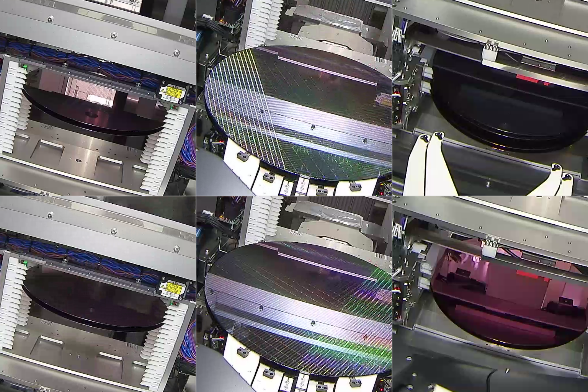
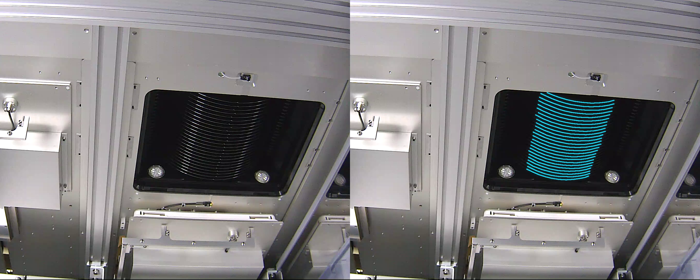
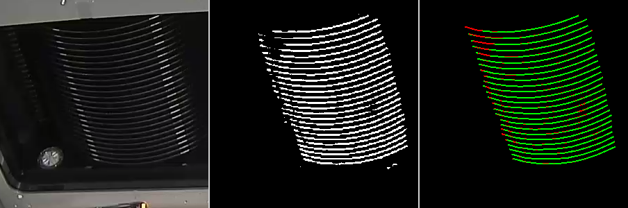
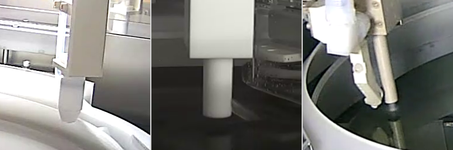

01 · Overview
The cameras were not originally built into every machine. When the monitoring system was needed, a camera had to be attached inside the chamber. Its position could be slightly different on each machine, so the algorithms could not rely on one fixed camera setup.
The inspection scope covered wafer handling, chemical dispensing, and visible changes inside the equipment.

The project covered several inspection tasks related to wafer handling, chemical dispensing, and equipment condition. Depending on the task, I used AI models, conventional computer-vision algorithms, or a combination of both.
The table summarizes the inspection problems I investigated. The detailed sections below focus on cassette inspection and nozzle monitoring.
| Area | Inspection task | Inspection objective |
|---|---|---|
| Wafer handling | Cassette occupancy | Verify whether a wafer is present in each cassette slot. |
| Wafer position | Verify that the wafer is positioned correctly in the cassette and inside the processing chamber. | |
| Wafer condition | Detect visible cracks, discoloration, and other changes in the wafer's appearance. | |
| Process monitoring | Nozzle tracking | Detect the chemical-dispensing nozzle and track its position as it moves. |
| 3D pose estimation | Detect visual reference points on the nozzle, estimate its 3D pose, and determine the position of each chemical outlet. | |
| Chemical flow | Verify that liquid is dispensed from the expected outlet and detect any residual droplets. | |
| Process verification | Compare the observed nozzle and chemical-flow states with the expected processing sequence. | |
| Equipment monitoring | Smoke detection | Detect visible smoke inside the processing chamber. |
| Crystallization detection | Detect crystallization or deposits forming around the processing area. |
02 · Cassette Inspection
One of the first tasks I worked on was checking which cassette slots contained a wafer. A cassette could hold around 20 wafers, so the system had to check each slot separately.
Wafer Segmentation
I first tried to segment the complete visible surface of each wafer. This was not reliable because the wafer behaved almost like a mirror. Depending on the lighting and viewing angle, the same surface could appear dark, bright, green, or similar to a nearby machine part.
While reviewing the camera footage, I noticed that the exposed side of the wafer produced a narrow but more consistent visual feature, largely because of the way it reflected light. I changed the segmentation target to this feature and prepared a dataset of 2,000 cassette images for it. I then trained U-Net-style segmentation models, using the lighting variation already present in the dataset together with additional augmentation.

Cassette Calibration and Wafer Verification
When a camera was installed, the first run estimated the position of the cassette in the frame. This provided a reference for the expected position of each cassette slot.

For subsequent frames, the system segmented the visible wafer sides and aligned the result with the calibrated slot positions. Post-processing converted the result into a confidence value for each slot. If the confidence passed the selected threshold, the wafer was considered present.

The thin-edge segmentation model achieved a validation Dice score of 0.93. Model inference ran at approximately 200 FPS, comfortably above the 30 FPS camera rate required for live inspection.
The benchmark measured model inference only under the original test configuration and did not represent the complete inspection pipeline.
03 · Nozzle Monitoring
The nozzle had several outlets for dispensing different chemicals, so the system needed to locate each outlet as the nozzle moved.
Nozzle Detection and Tracking
I worked with more than 20 nozzle designs, each with a different shape and outlet arrangement. I trained a model to detect the nozzle heads and used tracking to follow their movement across video frames.

For each nozzle type, I prepared a simplified 3D reference model describing its shape and outlet arrangement. Each model stored the reference points and outlet locations for that particular nozzle design.
Single-Camera Pose Estimation
As the nozzle rotated or moved, the outlet positions changed in the image. A 2D bounding box only showed the overall nozzle location, so it could not tell us which outlet was dispensing liquid.
I developed a single-camera pose-estimation method using visual reference points detected by the AI model. The detected 2D points were matched with their corresponding points in the nozzle-specific 3D model. From these correspondences, I estimated the nozzle’s pose and projected the known outlet positions onto the camera image.
This allowed the system to keep track of the individual outlets and associate the observed liquid flow with the correct chemical line.
Chemical-Flow Verification
After locating the outlets, I used image-processing algorithms to examine the small region below each expected position. The system could check whether liquid was present and whether it came from the correct outlet.
I also developed a method for detecting residual droplets. This was used to check the suck-back step, during which the remaining liquid should be pulled back into the nozzle after dispensing.
Nozzle detection → Tracking → Reference-point detection → 3D pose estimation → Outlet localization → Flow verification
04 · Real-Time Processing
The algorithms were designed for continuous camera monitoring. Each camera produced a 1920 × 1080 stream at 30 FPS, and several chambers could be connected to one workstation.
Processing speed was considered when selecting models and post-processing methods. Most inspection checks did not need to run on every frame, so their execution frequency could be adjusted depending on the task.
Different inspection configurations used different combinations of algorithms. In one configuration, a workstation with a single RTX 2080 Ti processed up to eight camera streams in real time. This configuration did not run every inspection function on every stream; configurations requiring more processing steps supported fewer simultaneous streams.
05 · My Role in the Project
I was responsible for finding and testing suitable AI and computer-vision methods for each inspection task. I prepared the data, trained and evaluated the models, developed the post-processing algorithms, and built the initial inference prototypes. Other engineers handled the final Java integration.
- Prepared and annotated datasets and trained segmentation and detection models.
- Developed wafer-side segmentation, camera calibration, and post-processing for cassette inspection.
- Developed single-camera nozzle pose estimation using AI-detected reference points and nozzle-specific 3D models, as well as algorithms for chemical-flow and residual-droplet detection.
- Built and evaluated multi-camera inference prototypes and adjusted the processing frequency for different inspection configurations.
06 · Project Outcome
By the time my work on the project ended, the system was being evaluated in a semiconductor manufacturing environment. Some of the inspection functions I worked on were later incorporated into a commercial monitoring product for manufacturing equipment.
This page covers the research and prototype work I completed before the final product continued development.
Project Note
This project was completed as part of my previous employment. The production source code, internal datasets, customer information, trained model weights, detailed manufacturing parameters, and final deployment belong to my former employer and are not included in this portfolio.
This page describes only the problems I worked on and the approaches I developed during the research stage. The images and video included here are anonymized, reduced-resolution examples of the research results. Customer names, equipment labels, and actual chamber footage are not included.